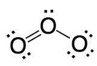
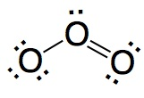
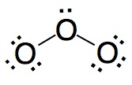
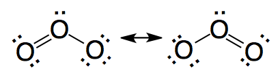

12. Estructura de Lewis de O3, ozono. Resonancia.


1. Cuenta el número total de electrones (NT) de la capa de valencia para los átomos de la molécula.
No es correcto. Hay tres átomos de oxígeno. 16 no es múltiplo de tres.
|
|
Correcto. Cada átomo de oxígeno tiene 6 electrones
en la capa de valencia.
|
|
No es correcto. Oxígeno tiene 6 electrones en la capa de valencia,
no 7..
|
2. Siguiendo el modo de razonamiento habitual podemos concluir que la estructura de Lewis correcta para O3 es:
|  | No es correcto. En esta estructura los enlaces O-O
son diferentes lo que esta en contradicción con la experiencia.
|
|  | No es correcto. En esta estructura los enlaces O-O
son diferentes lo que esta en contradicción con la experiencia.
|
|  | No es correcto. En esta estructura el átomo de oxógeno
central no completa el octeto.
|
|  | Correcto. La estructura de ozono se describe como una resonancia
entre las dos estructuras mostradas.
|
3. ¿Como describirias la resonancia en el ozono? Abre las animaciones y selecciona la que consideres correcta.
| Animación1 | No es correcto. La animación muestra movimiento de alargamiento
y contracción de enlaces que son habituales en moléculas angulares independientemente de la resonancia.
|
| Animación2 | No es correcto. La animación muestra una mezcla de moléculas
con los enlaces intercambiados.
|
| Animación3 | Correcto. El par electrónico se deslocaliza a lo
largo de los dos enlaces O-O. Los lóbulos muestran que se trata de un enlace pi deslocalizado a los
tres átomos de oxígeno.
|